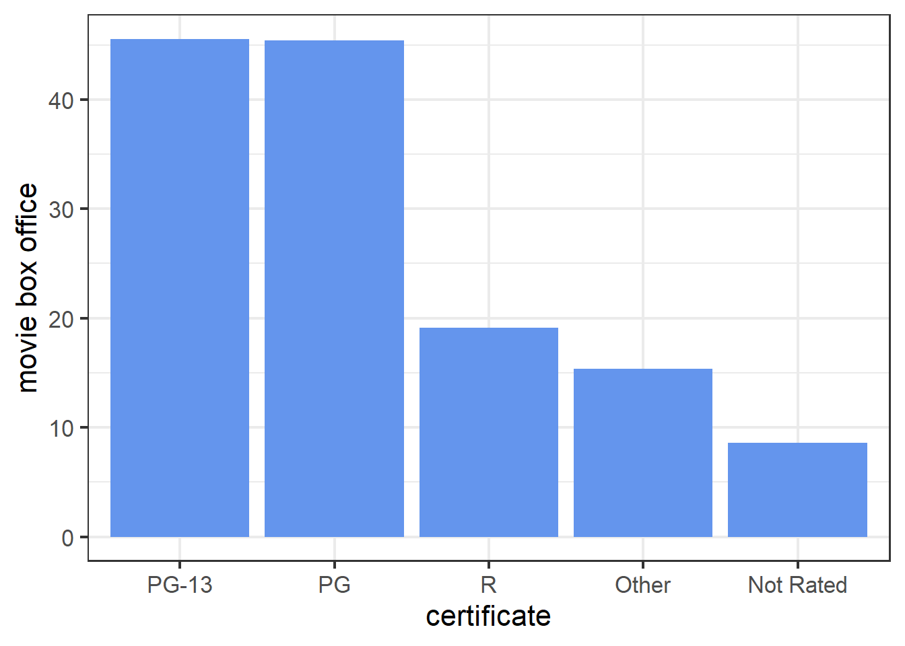

Chapter 5 Random Forest
5.1 Model Fitting
##
## Call:
## randomForest(formula = gross ~ year + certificate + runtime + genre + rating, data = train_dat, importance = TRUE)
## Type of random forest: regression
## Number of trees: 500
## No. of variables tried at each split: 1
##
## Mean of squared residuals: 1496.916
## % Var explained: 62.24We can read from the information of random forest model that the R-Squared value on the training set is 0.6224, which is less than the R-Squared value of tree model on the training set 0.7757, but is larger than the R-Squared value of linear model on the training set 0.2641. However, considering the tree model tend to be overfitting, I should compare their performance on the test set.
5.2 Model Evaluation
## MSE MAE R-Squared
## 1 1445.054 20.93738 0.6162513The evaluation table shows random forest’s performance on the test set. Random forest has slightly larger R-Squared value than tree model and much larger R-Squared value than linear model. But since the R-Squared value only increased from 0.5838 to 0.6163, I do not think random forest and tree model has very different performance.
5.3 Model Interpretation
5.3.1 Partial Dependence Plot
Again the PDP of rating shows that the overall trend is the same as PDP in linear model and tree model: as rating goes up, predicted movie box office rises. However, we can note that the range of movie box office is much larger than the range of movie box office in linear and tree model. This shows that rating is much more important in random forest than as it is in linear and tree model. And this is what I expected since intuitively, high quality movies will attract more people to see.
The PDP of runtime in random forest leads to similar conclusion: movie with longer run time tend to have more box office. But note that the range of box office is almost a half of it in rating part, this suggests that runtime is far less important than rating in random forest model. We did not observe this difference in tree model and we indeed observed a little difference in linear model but it is not obvious as it is in random forest model. In my opinion, I support the conclusion that rating is much more important than runtime since length of a movie is never a deterministic factor of whether it is a good or bad movie, hence less impact on the movie box office.

The PDP of certificate in random forest model shows that PG-13 and PG movies tend to have more box office while Not Rated movies tend to have less box office. This is similar to the results obtained from linear and tree model.
The PDP of genre in random forest model shows that animation, action, and adventure movies are top three most popular types while drama, biography, and romance are the three types with least audience. This is consistent with the conclusion obtained from linear and tree model. And in terms of the difference between each genre, the plot is more like what we observed in tree model part.
5.3.2 Local Interpretable Model-agnostic Explanations (LIME)
| model_intercept | model_prediction | feature | feature_value | feature_weight | feature_desc | prediction |
|---|---|---|---|---|---|---|
| 13.233 | 57.499 | year | 27 | -1.574 | year = 1996 | 25.02 |
| 13.233 | 57.499 | certificate | 3 | 25.748 | certificate = PG | 25.02 |
| 13.233 | 57.499 | runtime | 100 | 15.070 | runtime <= 232 | 25.02 |
| 13.233 | 57.499 | genre | 1 | 17.308 | genre = Action | 25.02 |
| 13.233 | 57.499 | rating | 5 | -12.285 | 3.27 < rating <= 5.25 | 25.02 |
From the explanation table, we have that the local model for case 3649 is \(\hat{y}_{lime} = 77.399 -12.144 \cdot \mathbf{1}_{3.27 < rating <= 5.25}+26.044 \cdot \mathbf{1}_{certificate = PG}+19.739 \cdot \mathbf{1}_{genre = Action}-49.789 \cdot \mathbf{1}_{runtime <= 232}+3.814 \cdot \mathbf{1}_{year = 1996}\). By doing comparison with the results from linear and tree model, we find that in terms of direction, linear model and random forest give the same interpretation for case 3649; in terms of magnitude, three models generated pairwise different local models. And we can also find some common place resembled by all three models: runtime = PG and genre = Action has similar scale positive contribution in all three models.
## lime error original error
## 1 -38.81143 -7.771431
## 2 125.96443 76.427427
## 3 -47.76211 -8.010111
## 4 -18.66056 -7.084560The residual table shows that our random forest model also outperforms its local model. Also note that random forest makes slightly less error than tree model did for case 6155 and case 3649, and make larger error for case 10 and case 4464. This supports the idea that random forest model does not have much better performance than tree model in terms of accuracy.
5.3.2.1 Gower Distance
Again we read from the plot that as Gower distance increases, the variance of difference between pairs increases. And note that the range of difference is similar to the range obtained in linear model, and it is about a half of the range get in tree model. As I mentioned in tree model part, I think more variance makes more sense in real situation, thus maybe random forest does not do as well as tree model for this regard.
5.3.3 Shapley Additive Explanations
Since case 10 has the most predicted value and case 4464 has the least predicted value in random forest model, we focus on these two cases. From the SHAP plot, runtime and rating contribute majority of the difference between mean gross and prediction of case 10; year is a main factor caused the low prediction for case 4464. This is basically the same as what we derived from tree model. Then, comparing the interpretation provided by SHAP and by LIME, again, they are not consistent with each other for some features. Still taking case 10 as an example, LIME implies that runtime has a negative effect on predicted value while SHAP indicates that runtime has a positive effect. Another point that I want to mention is that if the Shapley value seem to have some randomness, i.e., if I do not fix a seed, every time I run the code, I get different SHAP plot.
5.3.4 Feature Importance
The feature importance plot shows that certificate is the most important feature while year is the least important feature. This seems to be not consistent with result obtained from partial dependence plot. For example, from PDP, rating is more important than runtime and certificate as it caused more variation in movie box office. And we also note that the feature importance in three models are different from each other no matter using PDP or some other methods. But in terms of percentage, I think rating’s importance does not change a lot from model to model.